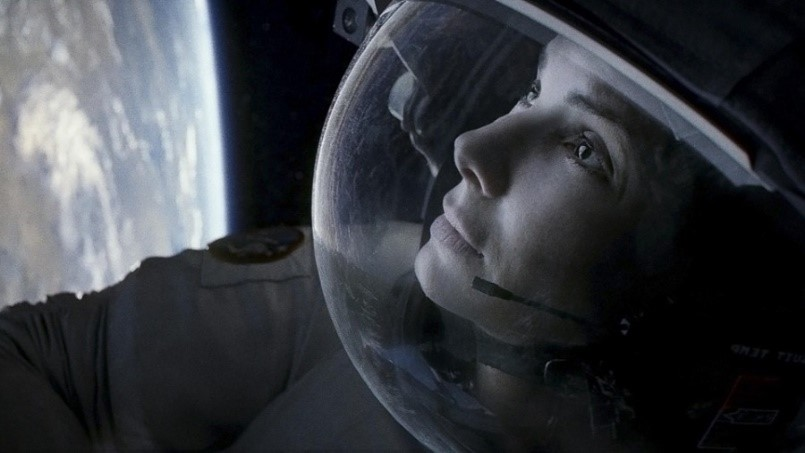

Billy Elliot
Fue en el año 2000 que esta película británica, dirigida por Stephen Daldry (Las Horas), nos robó el corazón. La historia nos lleva a un barrio humilde de Inglaterra, donde un niño vibra con el baile en plena crisis económica, a mediados de los 80. Descubierto por una profesora de ballet, este sensible chiquillo debe luchar contra los prejuicios y la pobreza de su entorno para cumplir su sueño: convertirse en bailarín clásico.
Grandes actuaciones del pequeño protagonista (Jamie Bell) y de la gran actriz inglesa Julie Walters, quien emociona como la maestra que no se rinde con tal de ver que Billy desarrolle su vocación y sea feliz.
SINOPSIS:
El niño de once años Billy Elliot vive una vida complicada en Durham. La vida de Billy consiste en cuidar de su abuela, y visitar la tumba de su madre, con la que tenía una relación especial. En 1984, durante una huelga de mineros en el condado de Durham, los enfrentamientos entre piquetes y policía están a la orden del día. Entre los que protestan con más vehemencia se encuentran el hermano (Tony) y el padre (Jackie), de Billy. Jackie apunta a su hijo a clases de boxeo, tal y como es tradición con los hijos de los mineros. En el mismo gimnasio, se dan también clases de ballet, que resulta a Billy más llamativo que el boxeo, que no le gusta.
Gravedad

Antes de Roma, el mexicano Alfonso Cuarón fue aclamado internacionalmente por este filme en que dos astronautas dependen el uno del otro para sobrevivir, luego de quedar a la deriva en el espacio, luego de una suerte de tormenta de desechos.
Diálogos precisos y a veces preciosos, más que grandes efectos especiales (que de igual forma son un punto alto del filme), son los que sostienen a esta cinta en que el carisma y el talento de George Clooney y Sandra Bullock, los protagonistas.
Ganó siete premios Oscar, entre ellos el de Mejor Director para Cuarón, transformándose en un clásico moderno de esos que te quitan el aliento.
SINOPSIS:
Dos inmensidades integran la materia prima de Gravedad: la psique en su estado de crisis ante la alta probabilidad de morir y un viaje alrededor de nuestro planeta en el espacio sideral como una forma de enfrentar al vacío. El dolor en la Tierra, silenciado por la magnitud del espacio exterior, pierde peso al igual que el cuerpo en cuanto se somete a la fluctuación que impone la ausencia de gravedad. Las emociones carecen del malestar de la vida cotidiana y se pueden resumir en la contemplación de un amanecer desde la órbita planetaria, reflejado en los cascos de los astronautas Ryan Stone (Sandra Bullock) y Kowalski (George Clooney), quienes danzan y laboran al unísono en torno al punto azul pálido de nuestro planeta. Carl Sagan hubiera sido feliz allá afuera con ellos. O bueno, al menos los primeros diez minutos.